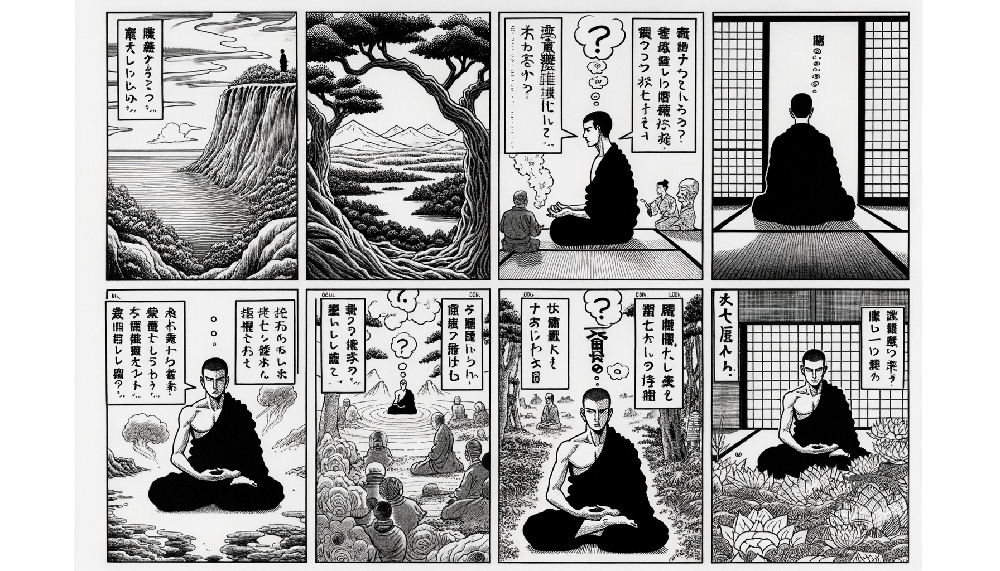

七十五巻 巻一覧
正法眼藏第66 三昧王三昧
本ページは各巻の紹介ページです。tools/gen_web_volumes.py が doc/正法眼蔵.txt から要点の短い抜粋を載せています（全文の引用ではありません）。
出典（原文）: https://shomonji.or.jp/zazen/doc/genzou.html
原文・現代語訳の全文は 全文ページを参照してください。
この巻の紹介（概要）
道元『正法眼蔵』七十五巻の第66篇「三昧王三昧」です。禅籍・経典への引用や語の行間が重なりやすいので、一度ですべてを要約に還元しない読み方を推奨します。問答 Bot では巻スコープにこの題名を含めると応答が安定しやすいことがあります。
語彙の足場
- 題名語：巻題「三昧王三昧」は、道元が本章で特に扱う論点の看板です。辞書義だけに固定せず、原文中の用例で意味を確かめます。
- 引用と典故：公案・経文の引用は、一字一句の照応（何に答えているか）を押さえると全体が見えやすくなります。
- 学び方：抜粋だけでも音読し、分からない箇所は印を付けて後から問うとよいです。
原文（要点の抜粋）
当巻の冒頭付近からの短い抜粋です。長い引用は載せていません。全文は全文ページを参照してください。出典はリポジトリ内 doc/正法眼蔵.txt です。原文の参照元: https://shomonji.or.jp/zazen/doc/genzou.html
驀然として盡界を超越して、佛祖の屋裏に太尊貴生なるは、結跏趺坐なり。外道魔儻の頂𩕳を踏飜して、佛祖の堂奥に箇中人なることは結跏趺坐なり。佛祖の極之極を超越するはただこの一法なり。このゆゑに、佛祖これをいとなみて、さらに餘務あらず。
まさにしるべし、坐の盡界と餘の盡界と、はるかにことなり。この道理をあきらめて、佛祖の發心、修行、菩提、涅槃を辨肯するなり。正當坐時は、盡界それ豎なるか横なるかと參究すべし。正當坐時、その坐それいかん。飜巾斗なるか、活鱍鱍地なるか。思量か不思量か。作か無作か。坐裏に坐すや、身心裏に坐すや。坐裡、身心裏等を脱落して坐すや。恁麼の千端萬端の參究あるべきなり。身の結跏趺坐すべし、心の結跏趺坐すべし。身心脱落の結跏趺坐すべし。
先師古佛云、參禪者身心脱落也、祗管打坐始得。不要燒香、禮拜、念佛、修懺、看經（參禪は身心脱落なり、祗管に打坐して始得ならん。燒香、禮拜、念佛、修懺、看經を要せず）。
あきらかに佛祖の眼睛を抉出しきたり、佛祖の眼睛裏に打坐すること、四五百年よりこのかたは、ただ先師ひとりなり、震旦國に齊肩すくなし。打坐の佛法なること、佛法は打坐なることをあきらめたるまれなり。たとひ打坐を佛法と體解すといふとも、打坐を打坐としれる、いまだあらず。いはんや佛法を佛法と保任するあらんや。
しかあればすなはち、心の打坐あり、身の打坐とおなじからず。身の打坐あり、心の打坐とおなじからず。身心脱落の打坐あり、身心脱落の打坐とおなじからず。既得恁麼ならん、佛祖の行解相應なり。この念想觀を保任すべし、この心意識を參究すべし。
釋迦牟尼佛告大衆言（釋迦牟尼佛、大衆に告げて言はく）、
若結跏趺坐（結跏趺坐するが若きは）、
身心證三昧（身心證三昧なり）。
威徳衆恭敬（威徳衆恭敬す）、
如日照世界（日の世界を照すが如し）。
除睡懶覆心（睡懶覆心を除き）、
身輕不疲懈（身輕くして疲懈せず）、
図解（4コマ・AI生成）
教義の根拠は原文・出典に従い、漫画は比喩の補助に留めてください。

深掘り（読解のコツ）
- 道元文は定義の羅列に見えても、多くの場合誤解への遮断と正伝の姿勢が背骨になっています。
- 「当体」「現成」「即」などの語が出たら、その巻独自の差別相にどう接続しているかをメモしておくとよいです。